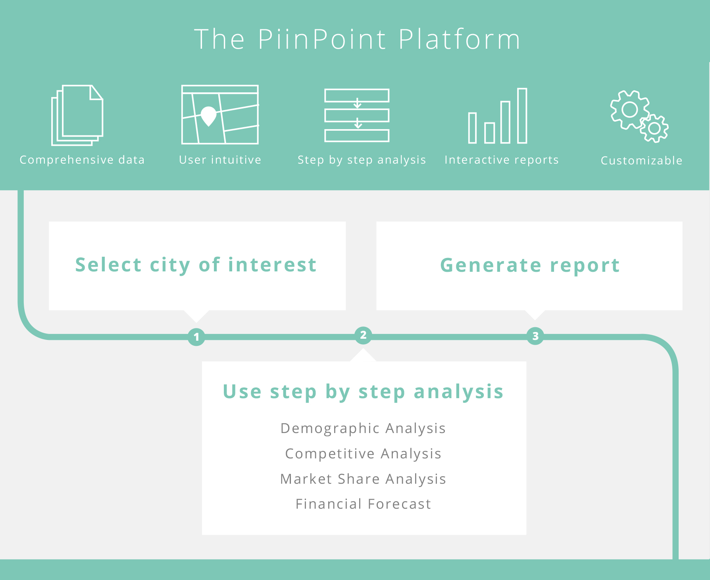

I worked as PiinPoint's lead designer during their time at YCombinator's Winter 2014 batch. I was responsible for all things design, from talking to our users to coding the front-end. The map tool was the main part of our web application. I also worked on the company website.
RadioShack has recently decided to close more than 500 stores while the Gap has closed 20% of its locations in the last few years. With increasing competition from online retailers, understanding store locations is more and more important.
I spoke with small business owners and executives of large retailers. These user interviews helped me understand their pain points and how they use our product.
The problems our users faced were actually very different depending on the size of their business, but they have one thing in common. Both want the process to be faster so they can react faster to changes.
Small businesses rely on free data. They use Google to search for competitors, government websites to look for census data and real estate listings to find potential locations. Business owners spend a long time collecting and organizing these data.
Larger businesses buy data. They use slow and complicated GIS software to analyse large amounts of location-based data. Analysts want an easier way to work with the data and a better way to present their findings to key decision makers.
PiinPoint is the one-stop-shop for analysing locations. We handle the tedious and repetitive work so the business can focus on making better decisions.
The map was the star of the page so I decided to give everything else a flat and monochomatic look. The UI went through many iterations in just 4 months and got a bit more modern with every update.
As we added more features, control panels, pop-up and legends started taking up more map real estate. Here's the map tool in Feburary 2014. All four corners of the map are filled with buttons and legends.
The map tool is a powerful and feature-rich tool but it needs to look simple. The key to achieving this is to hide functionalities when they are not needed but still make them easy to find.
Enterprise software has a reputation for being ugly and hard to use. Our design changes made us stand out in a good way. During demos to potential clients and industry experts, we recieved many compliments on the style of the map tool. They were excited about the possibilities and impressed by how much the map tool improved in just 4 months.